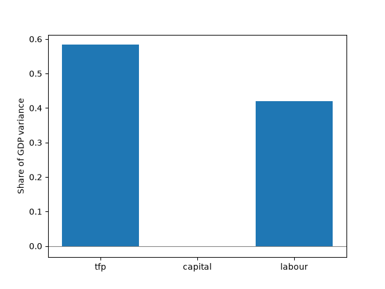
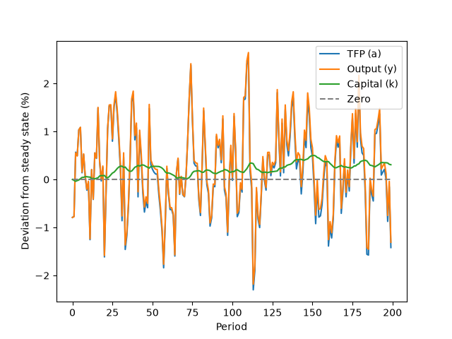

第 16 章: 確率的ソロー・モデル¶
16.1 この章の地図¶
景気循環は、何が起こすのでしょうか。全要素生産性（TFP）の変動だ、と考えるのが、実物的景気循環（RBC）理論です。この章では、その準備として、3 つのことをします。(1) GDP の変動を、TFP・資本・労働の寄与に分解する。(2) TFP を AR(1)（第 8 章）として、回帰で求める。(3) 第 5 章のソロー・モデルに、確率的な TFP を入れて、シミュレーションする。最後に、このモデルが再現できない特徴（消費が平滑であること）を、確かめます。
| 項目 | 内容 |
|---|---|
| 経済学の題材 | TFP（ソロー残差）、景気循環の要素分解、共分散の項、TFP の AR(1)、確率的ソロー・モデル、消費の平滑化 |
| 使う Python の機能 | dataclass(frozen=True)、Series の cov・var、DataFrame の組み立て、乱数の生成器を引数にする設計（第 8 章） |
| 新しく導入するライブラリ | なし |
| 完成形 | SolowParameters、total_factor_productivity、business_cycle_components、decompose_business_cycle、fit_ar1_without_constant、steady_state_capital、simulate_with_shocks、stochastic_solow、log_deviations |
| ファイル | 実装: lib/chapter16/solow_stochastic.py、lib/chapter16/plot.py／テスト: test/chapter16/test_solow_stochastic.py、test/chapter16/test_plot.py（自分で書くときは、practice/chapter16/ に、同じ名前で作ります） |
| データ | data/solow_quarterly.csv（架空の四半期データ。1980Q1〜2019Q4、確率的ソロー・モデルから作った。実在の統計ではありません） |
経済学の式とコードの対応¶
| 経済学 | 式 | コード |
|---|---|---|
| 生産関数 | Y = A·B·K^α·H^(1−α) | （simulate_with_shocks の中） |
| TFP | A = Y ÷ (K^α·H^(1−α)) | total_factor_productivity(gdp, capital, hours, alpha) |
| 乖離の恒等式 | y = a + α·k + (1−α)·h | business_cycle_components(df, alpha) |
| 要素の寄与 | Cov(y, a) ÷ Var(y) など | decompose_business_cycle(cycles, alpha) |
| TFP の AR(1) | a(t) = ρ·a(t−1) + ε(t) | fit_ar1_without_constant(x) |
| 資本の蓄積 | K(t+1) = s·Y(t) + (1−δ)·K(t) | stochastic_solow(params, n, rng) |
| 定常状態の資本 | K* = (s·H^(1−α) ÷ δ)^(1÷(1−α)) | steady_state_capital(params) |
記号について: α は資本分配率、s は貯蓄率、δ は減耗率（第 5 章と同じ）。H は総労働時間、A は TFP の変動、B は TFP のトレンドです。y・k・h・a は、GDP・資本・総労働時間・TFP の、トレンドからの乖離（%）です。ρ と σ は、TFP の AR(1) の係数と、ショックの標準偏差で、第 8 章の ρ・σ と同じ役割です。第 13・14 章の y・p（産出量と物価の乖離）とは別の使い方です。一覧は、記号について を参照してください。
16.2 予想する¶
- GDP = 4、資本 = 4、総労働時間 = 1、α = 0.5 のとき、TFP はいくつですか
- この章の架空のデータ（TFP の変動を主役にして作ったもの）では、GDP の変動の何割が、TFP の変動で説明されるでしょうか（資本と労働の寄与も、予想します）
- 貯蓄率が一定（s = 0.2）のソロー・モデルで、消費と投資の変動は、GDP の変動に比べて、大きいですか、小さいですか
16.3 モデルの考え方¶
TFP と、乖離の恒等式¶
生産関数 Y = A·K^α·H^(1−α) の対数をとると、log Y = log A + α·log K + (1−α)·log H。TFP は、Y を、観測できる要素（K と H）で割った残りで、「ソロー残差」とも呼ばれます。各変数の、HP フィルター（第 9 章）によるトレンドからの乖離は、同じ関係を満たします（HP フィルターは線形なので）。
y = a + α·k + (1−α)·h
景気循環の要素分解¶
Var(y) = Cov(y, y) に、y = a + α·k + (1−α)·h を代入すると、
Var(y) = Cov(y, a) + α·Cov(y, k) + (1−α)·Cov(y, h)
右辺の 3 項が、TFP・資本・労働の寄与です。両辺を Var(y) で割ると、合計が 1 の割合になります。
TFP の寄与 = Cov(y, a) ÷ Var(y)、資本の寄与 = α·Cov(y, k) ÷ Var(y)、労働の寄与 = (1−α)·Cov(y, h) ÷ Var(y)
元の記事は、同じ分解を、分散と共分散の式で書いています（(σa² + α·σak + (1−α)·σah) ÷ σy² など）。この式は、上と同じものです。分散だけを足して割ると、共分散の項が落ちて、合計が 1 になりません（練習問題）。
TFP の AR(1)¶
TFP の乖離 a(t) を、a(t−1) に、定数項なしで回帰します（乖離は、平均が 0 だから）。傾きが ρ、残差の標準偏差が σ です。
確率的ソロー・モデル¶
生産関数 Y(t) = A(t)·B(t)·K(t)^α·H^(1−α)、資本の蓄積 K(t+1) = s·Y(t) + (1−δ)·K(t)、消費 C = (1−s)·Y、投資 I = s·Y
TFP: log A(t) = ρ·log A(t−1) + ε(t)
H は一定、B(t)（トレンド）の成長率 g は、既定で 0 とします。TFP のショック ε の系列を与えれば、K・Y・C・I が決まります。
16.4 プログラミング¶
TFP と、パラメーター¶
def test_TFPは産出量を要素投入で割った値() -> None:
gdp = pd.Series([4.0, 100.0])
capital = pd.Series([4.0, 100.0])
hours = pd.Series([1.0, 100.0])
tfp = total_factor_productivity(gdp, capital, hours, alpha=0.5)
assert tfp.tolist() == pytest.approx([2.0, 1.0])
def test_パラメーターの範囲が合わなければ受け付けない() -> None:
with pytest.raises(ValueError, match="パラメーター"):
SolowParameters(alpha=1.0)
with pytest.raises(ValueError, match="パラメーター"):
SolowParameters(saving=0.0)
with pytest.raises(ValueError, match="パラメーター"):
SolowParameters(depreciation=1.5)
with pytest.raises(ValueError, match="パラメーター"):
SolowParameters(rho=1.0)
with pytest.raises(ValueError, match="パラメーター"):
SolowParameters(sigma=-0.1)
with pytest.raises(ValueError, match="パラメーター"):
SolowParameters(saving=1.0)
with pytest.raises(ValueError, match="パラメーター"):
SolowParameters(depreciation=1.0)
with pytest.raises(ValueError, match="パラメーター"):
SolowParameters(hours=0.0)
@dataclass(frozen=True)
class SolowParameters:
"""資本分配率 α、貯蓄率 s、減耗率 δ、TFP の ρ と σ、総労働時間 H、成長率 g。"""
alpha: float = 0.36
saving: float = 0.2
depreciation: float = 0.025
rho: float = 0.55
sigma: float = 0.0078
hours: float = 1.0
growth: float = 0.0
def __post_init__(self) -> None:
if not (
0 < self.alpha < 1
and 0 < self.saving < 1
and 0 < self.depreciation < 1
and abs(self.rho) < 1
and self.sigma >= 0
and self.hours > 0
):
raise ValueError(
"パラメーターは、α・s・δ が 0 と 1 の間、"
"|ρ| < 1、σ ≥ 0、H > 0 でなければならない"
)
def total_factor_productivity(
gdp: pd.Series, capital: pd.Series, hours: pd.Series, alpha: float
) -> pd.Series:
"""TFP = Y ÷ (K^α·H^(1-α))。"""
return gdp / (capital**alpha * hours ** (1 - alpha))
定常状態¶
ショックがなければ、資本は、貯蓄 = 減耗となる水準 K* にとどまります。
PARAMS = SolowParameters(
alpha=0.36, saving=0.2, depreciation=0.025, rho=0.55, sigma=0.0078, hours=1.0
)
def test_定常状態の資本は貯蓄と減耗が等しくなる水準() -> None:
k = steady_state_capital(PARAMS)
output = k**PARAMS.alpha * PARAMS.hours ** (1 - PARAMS.alpha)
assert PARAMS.saving * output == pytest.approx(PARAMS.depreciation * k)
def test_ショックがなければ定常状態にとどまる() -> None:
quiet = SolowParameters(sigma=0.0)
df = stochastic_solow(quiet, 30, np.random.default_rng(0))
assert df["K"].tolist() == pytest.approx([steady_state_capital(quiet)] * 30)
assert df["A"].tolist() == pytest.approx([1.0] * 30)
assert df["Y"].nunique() == 1
def steady_state_capital(params: SolowParameters) -> float:
"""TFP の乱れがないときの定常状態の資本 K* = (s·H^(1-α) ÷ δ)^(1÷(1-α))。"""
return float(
(params.saving * params.hours ** (1 - params.alpha) / params.depreciation)
** (1 / (1 - params.alpha))
)
モデルの計算¶
ショックの系列を与える関数を先に作ります（乱数を使わないので、手で確かめられます）。
def test_TFPはAR1で最初の期はショックそのもの() -> None:
shocks = np.array([0.01, 0.0, 0.0])
df = simulate_with_shocks(PARAMS, shocks)
assert np.log(df["A"]).tolist() == pytest.approx(
[0.01, 0.55 * 0.01, 0.55**2 * 0.01]
)
def test_消費と投資は産出量を貯蓄率で分ける() -> None:
df = stochastic_solow(PARAMS, 50, np.random.default_rng(1))
assert df["C"].to_numpy() == pytest.approx(
((1 - PARAMS.saving) * df["Y"]).to_numpy()
)
assert df["I"].to_numpy() == pytest.approx((PARAMS.saving * df["Y"]).to_numpy())
assert (df["C"] + df["I"]).to_numpy() == pytest.approx(df["Y"].to_numpy())
def test_資本は前期の投資と減耗後の資本の和() -> None:
df = stochastic_solow(PARAMS, 50, np.random.default_rng(1))
expected = df["I"] + (1 - PARAMS.depreciation) * df["K"]
assert df["K"].iloc[1:].to_numpy() == pytest.approx(expected.iloc[:-1].to_numpy())
def test_生産関数は産出量を決める() -> None:
df = stochastic_solow(PARAMS, 20, np.random.default_rng(2))
expected = df["A"] * df["K"] ** PARAMS.alpha * PARAMS.hours ** (1 - PARAMS.alpha)
assert df["Y"].to_numpy() == pytest.approx(expected.to_numpy())
def test_プラスのTFPショックは同じ期の産出を増やし資本は翌期から増える() -> None:
shocks = np.array([0.01, 0.0, 0.0, 0.0])
df = simulate_with_shocks(PARAMS, shocks)
k_star = steady_state_capital(PARAMS)
assert df["K"].iloc[0] == pytest.approx(k_star)
assert df["Y"].iloc[0] > df["Y"].iloc[1] > 0
assert df["K"].iloc[1] > k_star
assert df["K"].iloc[2] > df["K"].iloc[1]
def test_初期の資本が定常状態より大きければ収束速度は1マイナス1マイナスα倍のδ() -> None:
quiet = SolowParameters(sigma=0.0)
k_star = steady_state_capital(quiet)
df = simulate_with_shocks(quiet, np.zeros(40), initial_capital=k_star * 1.001)
gap = np.log(df["K"] / k_star)
speed = (1 - quiet.alpha) * quiet.depreciation
assert gap.iloc[1] / gap.iloc[0] == pytest.approx(1 - speed, abs=1e-4)
assert gap.iloc[-1] < gap.iloc[0]
def simulate_with_shocks(
params: SolowParameters,
shocks: NDArray[np.float64],
initial_capital: float | None = None,
) -> pd.DataFrame:
"""TFP のショック ε(t) の系列を与えて、A・K・Y・C・I の水準を計算する。
初期の資本は、既定で、定常状態の値。最初の期の log A は、ショックそのもの。
"""
capital = (
steady_state_capital(params) if initial_capital is None else initial_capital
)
log_a = 0.0
rows = []
for t, shock in enumerate(shocks):
log_a = params.rho * log_a + float(shock)
trend = (1 + params.growth) ** t
output = (
float(np.exp(log_a))
* trend
* capital**params.alpha
* params.hours ** (1 - params.alpha)
)
rows.append(
{
"A": float(np.exp(log_a)),
"K": capital,
"Y": output,
"C": (1 - params.saving) * output,
"I": params.saving * output,
}
)
capital = params.saving * output + (1 - params.depreciation) * capital
return pd.DataFrame(rows)
最後のテストは、第 5 章の収束の速さ λ = (1 − α)·δ と、一致します（定常状態の近くで、資本の乖離は、毎期 1 − λ 倍になる）。
次に、乱数の生成器を引数にして、毎期ショックが起きるシミュレーションにします（第 8 章と同じ設計）。
def test_乱数の種が同じなら同じ結果() -> None:
first = stochastic_solow(PARAMS, 30, np.random.default_rng(3))
second = stochastic_solow(PARAMS, 30, np.random.default_rng(3))
pd.testing.assert_frame_equal(first, second)
def test_シミュレーションの長さは1以上() -> None:
with pytest.raises(ValueError, match="1 以上"):
stochastic_solow(PARAMS, 0, np.random.default_rng(0))
def stochastic_solow(
params: SolowParameters, n: int, rng: np.random.Generator
) -> pd.DataFrame:
"""毎期、TFP にショックが起きる、n 期間のシミュレーション（乱数の生成器を渡す）。"""
return simulate_with_shocks(params, white_noise(n, params.sigma, rng))
定常状態からの乖離¶
def test_定常状態からの対数乖離は百分率() -> None:
shocks = np.array([0.01, 0.0])
df = simulate_with_shocks(PARAMS, shocks)
dev = log_deviations(df, PARAMS)
assert list(dev.columns) == ["a", "y", "k", "c", "i"]
assert dev["a"].iloc[0] == pytest.approx(1.0)
assert dev["y"].iloc[0] == pytest.approx(1.0)
assert dev["k"].iloc[0] == pytest.approx(0.0, abs=1e-9)
def test_消費と投資の変動は産出量と同じになる() -> None:
"""貯蓄率が一定なので、モデルは、消費の平滑化を再現できない。"""
df = stochastic_solow(PARAMS, 200, np.random.default_rng(5))
dev = log_deviations(df, PARAMS)
assert dev["c"].to_numpy() == pytest.approx(dev["y"].to_numpy())
assert dev["i"].to_numpy() == pytest.approx(dev["y"].to_numpy())
def log_deviations(df: pd.DataFrame, params: SolowParameters) -> pd.DataFrame:
"""定常状態からの、対数の乖離（%）。列は a・y・k・c・i（トレンドがない場合）。"""
k_star = steady_state_capital(params)
y_star = k_star**params.alpha * params.hours ** (1 - params.alpha)
return pd.DataFrame(
{
"a": 100 * np.log(df["A"]),
"y": 100 * np.log(df["Y"] / y_star),
"k": 100 * np.log(df["K"] / k_star),
"c": 100 * np.log(df["C"] / ((1 - params.saving) * y_star)),
"i": 100 * np.log(df["I"] / (params.saving * y_star)),
}
)
2 つ目のテストが、このモデルの限界を示します。貯蓄率が一定なので、消費も投資も、産出量と、まったく同じ割合で動くのです（乖離が、全期間で一致）。現実のデータでは、消費は GDP より滑らかで、投資は GDP より大きく動きます（第 9 章）。
TFP の AR(1)¶
def test_AR1の係数は定数なしの回帰で求める() -> None:
rho, sigma = fit_ar1_without_constant(pd.Series([1.0, 0.5, 0.25, 0.125]))
assert rho == pytest.approx(0.5)
assert sigma == pytest.approx(0.0, abs=1e-12)
def test_長いAR1系列から係数と標準偏差を復元する() -> None:
x = pd.Series(ar1_series(0.6, 0.8, 20000, np.random.default_rng(4)))
rho, sigma = fit_ar1_without_constant(x)
assert rho == pytest.approx(0.6, abs=0.02)
assert sigma == pytest.approx(0.8, abs=0.02)
def fit_ar1_without_constant(x: pd.Series) -> tuple[float, float]:
"""x(t) を x(t-1) に、定数項なしで回帰する。係数 ρ と、残差の標準偏差 σ を返す。"""
lag = x.shift().dropna()
now = x.iloc[1:]
rho = float((now * lag).sum() / (lag**2).sum())
return rho, float((now - rho * lag).std())
要素分解¶
手計算の例は、a = (1, −1, 1, −1)、k = (1, 1, −1, −1)、h = (1, −1, −1, 1)、α = 0.5 です。y = a + 0.5·k + 0.5·h = (2, −1, 0, −1) で、寄与は 4/6、1/6、1/6 です。
def test_要素分解の寄与は手計算の例と一致する() -> None:
cycles = pd.DataFrame(
{
"a": [1.0, -1.0, 1.0, -1.0],
"k": [1.0, 1.0, -1.0, -1.0],
"h": [1.0, -1.0, -1.0, 1.0],
}
)
cycles["y"] = cycles["a"] + 0.5 * cycles["k"] + 0.5 * cycles["h"]
shares = decompose_business_cycle(cycles, alpha=0.5)
assert shares["tfp"] == pytest.approx(4 / 6)
assert shares["capital"] == pytest.approx(1 / 6)
assert shares["labour"] == pytest.approx(1 / 6)
assert shares.sum() == pytest.approx(1.0)
def test_生産関数が成り立てば寄与の和は1() -> None:
rng = np.random.default_rng(9)
cycles = pd.DataFrame({name: rng.normal(size=100) for name in ("a", "k", "h")})
cycles["y"] = cycles["a"] + 0.36 * cycles["k"] + 0.64 * cycles["h"]
shares = decompose_business_cycle(cycles, alpha=0.36)
assert shares.sum() == pytest.approx(1.0)
assert list(shares.index) == ["tfp", "capital", "labour"]
def decompose_business_cycle(cycles: pd.DataFrame, alpha: float) -> pd.Series:
"""GDP の変動の、TFP・資本・労働の寄与（合計 1）。"""
var_y = cycles["y"].var()
return pd.Series(
{
"tfp": cycles["y"].cov(cycles["a"]) / var_y,
"capital": alpha * cycles["y"].cov(cycles["k"]) / var_y,
"labour": (1 - alpha) * cycles["y"].cov(cycles["h"]) / var_y,
}
)
架空のデータで試す¶
data/solow_quarterly.csv は、確率的ソロー・モデルから作った、架空のデータです（GDP・資本・総労働時間の水準、160 四半期）。TFP は、ρ = 0.6、σ = 0.8% の AR(1)。総労働時間は、TFP に反応する AR(1)（ρ = 0.8）。資本は、貯蓄率 0.22、減耗率 0.025 で蓄積し、α = 0.36 です。
def test_同梱のデータは1980年から2019年までの160四半期() -> None:
df = load_solow_quarterly()
assert len(df) == 160
assert str(df.index[0]) == "1980Q1"
assert list(df.columns) == ["gdp", "capital", "total_hours"]
def test_乖離の系列は4列で生産関数の恒等式を満たす() -> None:
cycles = business_cycle_components(load_solow_quarterly(), alpha=0.36)
assert list(cycles.columns) == ["y", "k", "h", "a"]
identity = cycles["a"] + 0.36 * cycles["k"] + 0.64 * cycles["h"]
assert identity.to_numpy() == pytest.approx(cycles["y"].to_numpy())
def load_solow_quarterly(path: Path = DEFAULT_DATA_PATH) -> pd.DataFrame:
"""GDP・資本ストック・総労働時間（水準）の四半期データを読み込む。"""
return load_quarterly(path)
def business_cycle_components(df: pd.DataFrame, alpha: float) -> pd.DataFrame:
"""GDP・資本・総労働時間・TFP の、トレンドからの乖離（%）。列は y・k・h・a。"""
gdp = pd.Series(df["gdp"])
capital = pd.Series(df["capital"])
hours = pd.Series(df["total_hours"])
tfp = total_factor_productivity(gdp, capital, hours, alpha)
return pd.DataFrame(
{
"y": log_cycle(gdp),
"k": log_cycle(capital),
"h": log_cycle(hours),
"a": log_cycle(tfp),
}
)
def test_同梱のデータの要素分解() -> None:
cycles = business_cycle_components(load_solow_quarterly(), alpha=0.36)
shares = decompose_business_cycle(cycles, alpha=0.36)
assert shares["tfp"] == pytest.approx(0.583, abs=0.001)
assert shares["capital"] == pytest.approx(-0.003, abs=0.001)
assert shares["labour"] == pytest.approx(0.420, abs=0.001)
assert shares.sum() == pytest.approx(1.0)
def test_同梱のデータのTFPの変動はGDPの変動と強く相関する() -> None:
cycles = business_cycle_components(load_solow_quarterly(), alpha=0.36)
assert cycles["y"].std() == pytest.approx(1.279, abs=0.001)
assert cycles["a"].std() == pytest.approx(0.823, abs=0.001)
assert cycles["y"].corr(cycles["a"]) == pytest.approx(0.907, abs=0.001)
assert cycles["a"].corr(cycles["h"]) == pytest.approx(0.561, abs=0.001)
def test_同梱のデータのAR1の推定() -> None:
"""真の値（TFP は ρ = 0.6、σ = 0.8、労働時間は ρ = 0.8）とは、少し違う。"""
cycles = business_cycle_components(load_solow_quarterly(), alpha=0.36)
rho_a, sigma_a = fit_ar1_without_constant(cycles["a"])
rho_h, _ = fit_ar1_without_constant(cycles["h"])
assert rho_a == pytest.approx(0.514, abs=0.001)
assert sigma_a == pytest.approx(0.708, abs=0.001)
assert rho_h == pytest.approx(0.829, abs=0.001)
| 値 | |
|---|---|
| GDP の乖離の標準偏差（%） | 1.279 |
| TFP の乖離の標準偏差（%） | 0.823 |
| GDP と TFP の相関 | 0.907 |
| TFP と総労働時間の相関 | 0.561 |
| TFP の寄与 | 58.3% |
| 資本の寄与 | −0.3% |
| 労働の寄与 | 42.0% |
| TFP の AR(1) の係数 ρ（真の値 0.6） | 0.514 |
| TFP の AR(1) の標準偏差 σ（真の値 0.8%） | 0.708 |
| 総労働時間の AR(1) の係数（真の値 0.8） | 0.829 |

def plot_decomposition(shares: pd.Series) -> Figure:
"""GDP の変動に対する、TFP・資本・労働の寄与を、棒で描く。"""
fig, ax = plt.subplots()
ax.bar(list(shares.index), shares.to_numpy())
ax.axhline(0, color="gray", linewidth=0.8)
ax.set_ylabel("Share of GDP variance")
plt.close(fig)
return fig
読み取れることと、注意点:
- TFP が主役です（58%）。労働時間は、TFP に反応して動くので（相関 0.56）、労働の寄与が 42% あります。資本は、ゆっくり動くので、景気循環の変動の寄与は、ほぼ 0 です
- 真の値（ρ = 0.6、σ = 0.8）と、推定値（0.514、0.708）は、少し違います。HP フィルターが、ゆっくりした動きの一部を、トレンドとして取り除くことと、標本が短い（160 期）ことが、理由です（第 13 章と同じ注意。労働時間の ρ は、真の値 0.8 を上回っており、フィルターだけでは説明できません）
- 分解の割合は、α に依存します（練習問題）
確率的ソロー・モデルのシミュレーション¶
ρ = 0.6、σ = 0.8%、s = 0.2、δ = 0.025、α = 0.36 で、200 期間のシミュレーション（種 123）をします。
def test_シミュレーションの特徴は産出量とTFPが同じ動きで資本は緩やか() -> None:
params = SolowParameters(
alpha=0.36, saving=0.2, depreciation=0.025, rho=0.6, sigma=0.008, hours=1.0
)
simulated = stochastic_solow(params, 200, np.random.default_rng(123))
dev = log_deviations(simulated, params)
assert dev["y"].std() == pytest.approx(0.885, abs=0.001)
assert dev["k"].std() == pytest.approx(0.122, abs=0.001)
assert dev["y"].autocorr() == pytest.approx(0.576, abs=0.001)
assert dev["k"].autocorr() == pytest.approx(0.983, abs=0.001)
assert dev["y"].corr(dev["k"]) == pytest.approx(0.002, abs=0.001)
assert dev["y"].corr(dev["a"]) == pytest.approx(0.999, abs=0.001)
| TFP (a) | 産出量 (y) | 資本 (k) | |
|---|---|---|---|
| 標準偏差（%） | 0.886 | 0.885 | 0.122 |
| 自己相関（ラグ 1） | 0.574 | 0.576 | 0.983 |
| 産出量との相関 | 0.999 | 1.000 | 0.002 |

def plot_solow_simulation(dev: pd.DataFrame) -> Figure:
"""TFP・産出量・資本の、定常状態からの乖離（%）を、0 の線と一緒に描く。"""
n = len(dev)
fig, ax = plt.subplots()
ax.plot(range(n), dev["a"].to_numpy(), label="TFP (a)")
ax.plot(range(n), dev["y"].to_numpy(), label="Output (y)")
ax.plot(range(n), dev["k"].to_numpy(), label="Capital (k)")
ax.plot([0, n - 1], [0, 0], "--", color="gray", label="Zero")
ax.set_xlabel("Period")
ax.set_ylabel("Deviation from steady state (%)")
ax.legend()
plt.close(fig)
return fig
- 産出量は、TFP とほぼ同じ動きです（相関 0.999）。資本は、同じ期には動かず（ショックの翌期から）、変動は小さく（産出量の 14%）、持続性は非常に高い（自己相関 0.98）です。「カモシカ（産出量）と象（資本）」です
- 資本の変動が小さいので、このモデルでは、GDP の変動は、ほぼ、TFP の変動そのものです（相関 0.999）。労働は一定と仮定しているため、TFP の効果を、増幅する仕組みがありません
- 消費・投資・産出量の変動は、同じです。貯蓄率が一定のため
予想の答え合わせ¶
予想した答えを、プログラムで確かめます。
import numpy as np
import pandas as pd
from lib.chapter16.solow_stochastic import (
SolowParameters,
business_cycle_components,
decompose_business_cycle,
load_solow_quarterly,
log_deviations,
stochastic_solow,
total_factor_productivity,
)
tfp = total_factor_productivity(
pd.Series([4.0]), pd.Series([4.0]), pd.Series([1.0]), alpha=0.5
)
print("TFP:", round(float(tfp.iloc[0]), 4))
cycles = business_cycle_components(load_solow_quarterly(), alpha=0.36)
shares = decompose_business_cycle(cycles, alpha=0.36)
print("shares of GDP variance:", shares.round(3).to_dict())
params = SolowParameters(
alpha=0.36, saving=0.2, depreciation=0.025, rho=0.6, sigma=0.008, hours=1.0
)
dev = log_deviations(stochastic_solow(params, 200, np.random.default_rng(123)), params)
print("std of c / std of y:", round(dev["c"].std() / dev["y"].std(), 4))
print("std of i / std of y:", round(dev["i"].std() / dev["y"].std(), 4))
TFP: 2.0
shares of GDP variance: {'tfp': 0.583, 'capital': -0.003, 'labour': 0.42}
std of c / std of y: 1.0
std of i / std of y: 1.0
- 1 つ目の問い: TFP = 4 ÷ (4^0.5 × 1^0.5) = 4 ÷ 2 = 2.0 です。
- 2 つ目の問い: この章の架空のデータでは、TFP の寄与は約 58%（0.583）、労働の寄与は約 42%（0.42）、資本の寄与は、ほぼ 0（−0.003）です。これは、TFP の変動を主役にして作った架空のデータの結果です。RBC 理論が実証された、という意味ではなく、関数が分解できることの確認です。
- 3 つ目の問い: 貯蓄率が一定なら、消費も投資も、GDP とまったく同じ割合で動きます。標準偏差の比は、どちらも 1.0 です。
実行結果¶
cd apps/macro-programming/python
uv run pytest test/chapter16
30 passed
実際の統計では試していません。 TFP の計算に必要な、資本ストックと総労働時間の四半期データの、取得元と形を、確認できていないためです。この章のデータは、架空です。
16.5 規則で言うと¶
- 対数の恒等式を、分解の土台にする。 y = a + α·k + (1−α)·h が成り立てば、寄与の合計は 1。恒等式が成り立つことを、テストで確かめる
- 分散だけでなく、共分散も入れる。 要素が相関していれば、共分散の項が、寄与に入る
- 答えを知っているデータで、手続きを確かめる。 真の ρ・σ と、推定値の違いを、見る
- モデルが再現できない特徴を、確かめる。 消費の平滑化は、貯蓄率が一定のモデルでは、再現できない
混同しやすい点を、表にまとめます。
| 混同しやすい点 | 違い |
|---|---|
| TFP の水準 と 乖離 | TFP の水準は Y ÷ (K^α·H^(1−α))。乖離は、そのトレンドからの割合（%） |
| 寄与 と 相関 | 寄与は、Cov(y, 要素) ÷ Var(y)（合計 1）。相関は、−1 から 1。寄与は、要素の変動の大きさも反映 |
| H が一定 と H が変動 | この章のモデルは、H 一定。データの分解は、H の変動を含む。モデルで、労働の寄与が 0 になる |
| TFP のショック ε と 乖離 a | ε は、毎期のホワイト・ノイズ。a は、その蓄積（AR(1)） |
このモデルが成り立たない場面¶
- 貯蓄率が一定です。 家計は、将来を見据えて貯蓄を決めるはずです。次の章以降で、最適化から、貯蓄を内生的に決めます
- 労働が一定です。 労働時間は、景気循環で、大きく動きます（TFP との相関 0.56）
- TFP の変動の中身が、分かりません。 資本の稼働率や、測定誤差が、TFP の変動に含まれます
- パラメーターは、データと手続きの産物です。 ρ = 0.514 は、HP フィルターを使った推定値です
16.6 練習問題¶
| 種類 | 問題 |
|---|---|
| 想起 | 本文を閉じて、TFP の手計算のテスト（GDP = 4、資本 = 4、総労働時間 = 1、α = 0.5 で TFP = 2）を書いてください |
| 生成 | 解説を見る前に、共分散を入れず、分散だけで寄与を求める naive_shares(cycles, alpha)（Var(a) ÷ Var(y)、α²·Var(k) ÷ Var(y)、(1−α)²·Var(h) ÷ Var(y)）を、テストから書いてください。手計算の例と、同梱のデータで、合計はいくつになりますか。なぜですか |
| 多様 | α を 0.25、0.36、0.5 に変えたとき、同梱のデータの TFP の寄与は、どう変わるでしょうか（先に予想してから確かめてください） |
| 交互 | 第 9 章の log_cycle と relative_volatility で、シミュレーションの消費・投資の、産出量に対する相対的な変動を求めてください。第 9 章の架空のデータ（消費 0.76、投資 3.69）と、比べてください |
解答（先に自分で取り組んでから、開いてください）
想起:
def test_TFPは産出量を要素投入で割った値() -> None:
tfp = total_factor_productivity(
pd.Series([4.0]), pd.Series([4.0]), pd.Series([1.0]), alpha=0.5
)
assert tfp.tolist() == pytest.approx([2.0])
生成:
def naive_shares(cycles, alpha):
var_y = cycles["y"].var()
return pd.Series(
{
"tfp": cycles["a"].var() / var_y,
"capital": alpha**2 * cycles["k"].var() / var_y,
"labour": (1 - alpha) ** 2 * cycles["h"].var() / var_y,
}
)
def test_相関がなければ分散だけの分解でも合計は1() -> None:
cycles = pd.DataFrame(
{
"a": [1.0, -1.0, 1.0, -1.0],
"k": [1.0, 1.0, -1.0, -1.0],
"h": [1.0, -1.0, -1.0, 1.0],
}
)
cycles["y"] = cycles["a"] + 0.5 * cycles["k"] + 0.5 * cycles["h"]
assert naive_shares(cycles, 0.5).sum() == pytest.approx(1.0)
def test_同梱のデータでは共分散を無視すると合計は1にならない() -> None:
cycles = business_cycle_components(load_solow_quarterly(), alpha=0.36)
assert naive_shares(cycles, 0.36).sum() == pytest.approx(0.655, abs=0.001)
assert cycles["a"].cov(cycles["h"]) == pytest.approx(0.452, abs=0.001)
手計算の例は、a・k・h が互いに無相関なので、共分散の項が 0 で、合計が 1 です。同梱のデータでは、合計が 0.655 で、残りの約 35% は、共分散の項です。TFP と総労働時間が正の相関（共分散 0.452）なので、TFP の寄与に、労働を通じた効果（(1−α)·Cov(a, h)）が、含まれます。
多様: α が大きいほど、労働の割合が減り、TFP の割合が増えます（資本の寄与は、ほぼ 0 のままです）。
def test_αを変えたときのTFPの寄与() -> None:
df = load_solow_quarterly()
for alpha, expected in [(0.25, 0.510), (0.36, 0.583), (0.5, 0.676)]:
cycles = business_cycle_components(df, alpha=alpha)
shares = decompose_business_cycle(cycles, alpha=alpha)
assert shares["tfp"] == pytest.approx(expected, abs=0.001)
assert shares.sum() == pytest.approx(1.0)
α が 0.25 から 0.5 に上がると、TFP の寄与は 51% から 68% に上がります（労働の寄与は 49% から 33% に下がる）。分解の結果は、資本分配率という、仮定に依存します。
交互: 消費も投資も、産出量の定数倍なので、HP フィルターの循環も、産出量と一致します。
def test_モデルの消費と投資の相対的な変動は1() -> None:
params = SolowParameters(rho=0.6, sigma=0.008)
df = stochastic_solow(params, 200, np.random.default_rng(123))
y = log_cycle(df["Y"])
assert relative_volatility(log_cycle(df["C"]), y) == pytest.approx(1.0)
assert relative_volatility(log_cycle(df["I"]), y) == pytest.approx(1.0)
モデルでは、消費も投資も、相対的な変動が 1.0 です。第 9 章のデータでは、消費 0.76（GDP より滑らか）、投資 3.69（GDP の 3.7 倍）でした。確率的ソロー・モデルは、消費の平滑化と、投資の大きな変動を、再現できません。
16.7 振り返り¶
- TFP が、景気循環の主役だという予想は、当たりましたか。労働の寄与が 42% あったのは、なぜですか
- 共分散の項を落とすと、合計が 1 になりませんでした。分解の式を、どう確かめれば、安全ですか
- 消費の変動が、産出量と同じになるのは、モデルのどの仮定のためですか。その仮定を、どう変えますか
16.8 まとめ¶
- GDP の変動を、TFP・資本・労働の寄与に分解し、合計が 1 になること（共分散の項を含む）を確かめた
- TFP の AR(1) を、定数項なしの回帰で求め、HP フィルターの影響で、真の値と少し違うことを確かめた
- TFP が確率的に動くソロー・モデルを、乱数の生成器を引数にして作り、収束の速さが第 5 章の λ と一致することを確かめた
- モデルは、産出量と TFP がほぼ同じ動きになり、消費の平滑化を再現できないことを確かめた
- 次の章では、対数線形近似を自作して、動学モデルを線形にし、最適化から導かれる RBC モデル（第 18 章）に備えます